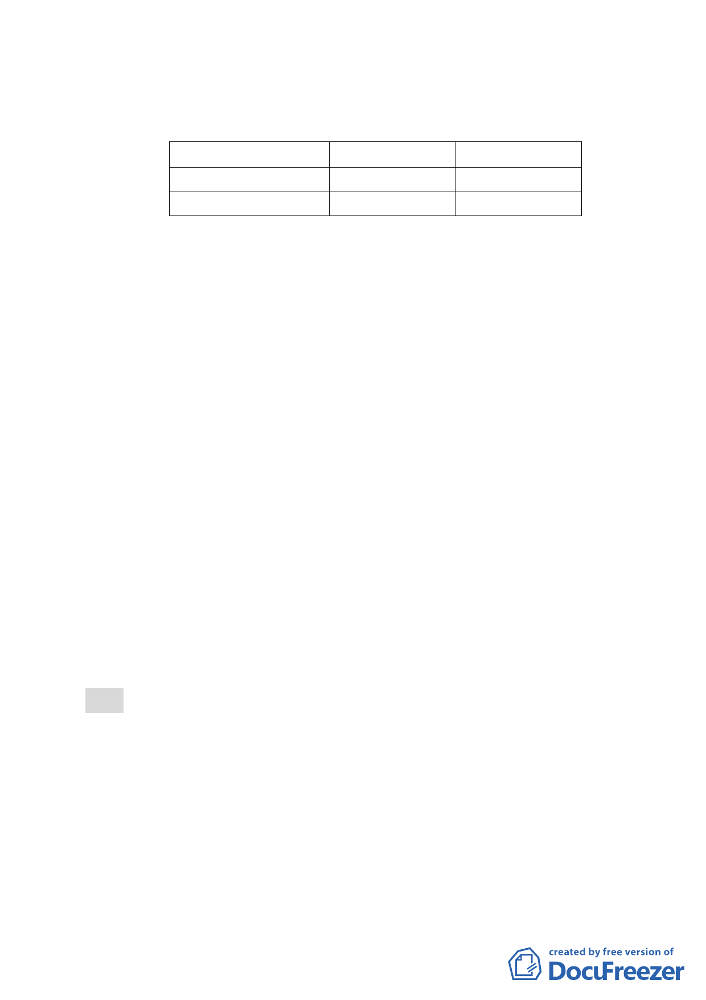

（二）土地使用分區管制
1.使用強度
使用分區
建蔽率
容積率
第三種住宅區(特)
45％
225％
第三之一種住宅區(特) 45％
2.使用管制
225％
本計畫之使用比照臺北市土地使用分區管制自治條例
第三種住宅區及第三之一種住宅區之使用組別。
3.本計畫區得適用100年9月20日公告之「修訂臺北市老舊
中低層建築社區辦理都市更新擴大協助專案計畫」之容
積獎勵。本計畫區總容積上限不得超過建築基地2倍法
定容積。
4.本計畫區獎勵容積核給額度，依本市都市設計及土地使
用開發許可審議委員會及都市更新及爭議處理審議會
審議結果辦理。
五、全案係市府 101 年 12 月 27 日府都規字第 10133699300 號公
告公開展覽並函送到會。
六、公民或團體所提意見：計 0 件。
七、申請單位：臺北市都市更新處。
八、辦理單位：臺北市政府。
九、法令依據：都市計畫法第 27 條第 l 項第 4 款。
決議：
一、本案除計畫書內「附件一」應依市府 101 年 11 月 27 日府都
新字第 10132108100 號公告「修訂臺北市老舊中低層建築社
區辦理都市更新擴大協助專案計畫 行動計畫一：以都市計畫
專案變更方式協助更新重建」第二次修訂內容提列，併同修
正計畫書、圖文字外，其餘依市府公展計畫書圖內容通過。
二、與會委員一致關切如何使住宅區更新時留設足夠人行道空
-3-